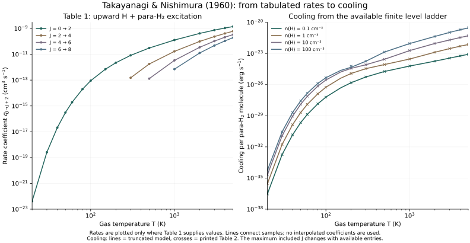
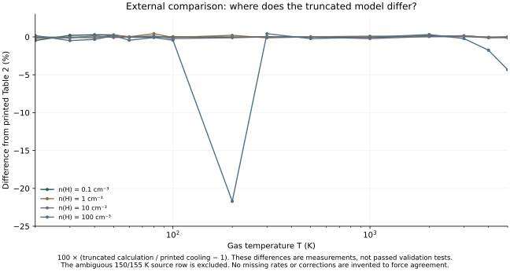

Rate-coefficient lineage / Takayanagi & Nishimura 1960
Follow a rate coefficient
into molecular cooling.
Before a cooling function becomes one line of code, it depends on collision partners, transition directions, level populations, and radiative losses. Here we trace those steps through a historical H₂ calculation.
Scope: 34 printed excitation coefficients and a declared finite-level calculation, compared with 60 printed cooling values. This is not a complete reproduction of the original cooling model. Numerical checks and differences from the source table are reported separately.
From H-atom collisions to para-H₂ radiation.



The coefficient qup has units cm³ s⁻¹. It counts excitations per collider–target pair; it is not yet an energy-loss coefficient. To obtain radiation, we must also determine the excited-state population and the energy carried by a decay.
These are the temperatures and channels printed in the 1960 source. The authors discuss limitations of their collision approximation and temperature-dependent accuracy; numerical reproduction of a coefficient does not establish that it is an accurate modern rate.
Definitions matter
Keep upward rates, downward rates, and energy losses distinct.
pJ/pJ−2 = n(H)qup / [n(H)qdown + AJ→J−2]
L / n(para-H₂) = ΣJ pJAJ→J−2ΔEJ,J−2
J denotes the upper state of a pair of adjacent even rotational levels. The population fractions sum to one. n(H) is the H-atom collider density, rather than the total hydrogen-nuclei density. The final cooling is in erg s⁻¹ per para-H₂ molecule; multiplying by its number density gives erg cm⁻³ s⁻¹.
The historical spontaneous-emission formula is A = 7.52 × 10⁻¹³ J(J−1)(2J−1)⁴/(2J+1) s⁻¹. The photon energy is ΔE = 2.3561 × 10⁻¹⁴(2J−1) erg. Both are retained as printed, without substituting modern coefficients.
What does a blank table entry mean?
Table 1 provides fewer transitions at lower temperatures. Its missing entries are preserved as unavailable inputs. At each temperature this experiment closes the ladder at the highest connected level for which an upward coefficient is listed: J = 2, 4, 6, or 8.
That is an explicit truncation of the model. It does not establish a zero physical rate to higher levels. The calculation includes H-atom collisions, para-H₂, and optically thin spontaneous emission at fixed gas temperature. It does not include ortho-H₂, other colliders, line trapping, gas chemistry, or a gas thermal-equilibrium solution.
An external check
Show the mismatch as part of the result.



The largest discrepancy is at T = 200 K and n(H) = 100 cm⁻³. The restricted calculation gives 4.6578 × 10⁻²⁵ erg s⁻¹ per molecule, compared with 5.95 × 10⁻²⁵ in the printed table: a difference of approximately −21.72%.
We have not established the cause. Additional level/rate information or a source correction may be needed before assigning an explanation. The input coefficients are left unchanged, and the discrepancy remains in the downloadable comparison.
A small, reproducible calculation
Run the level model without a large simulation.
Download these four files into one folder. The model uses at most five levels; no hydrodynamic simulation or original PDF is required at runtime.
python3 -m venv .venv
.venv/bin/python -m pip install -r requirements.txt
.venv/bin/python reproduce.py --output outputAll 12 numerical checks pass. They include comparison with an independently assembled rate matrix, stationary transition fluxes, population conservation and positivity, collisional/radiative energy balance, the dilute limit, and the dense Boltzmann limit of the same finite ladder.
The validation report records measured errors and tolerances, runtime versions, hashes, and a separate external-comparison summary. The source audit records the scan checksum, printed pages, reference values, and unresolved inputs.
Source and next steps.
Takayanagi & Nishimura (1960), PASJ 12, 77–105 ↗
ADS scan used for the audit ↗
Next, trace missing level information and the related prescriptions in Hattori, Nakano & Hayashi. The rate-coefficient lineage records the citation links; an exact numerical inheritance requires further equation-by-equation review.
Original implementation code is MIT. Generated data and figures have separate content terms; see https://koyamarium.github.io/rights/ . Original paper rights are unchanged.